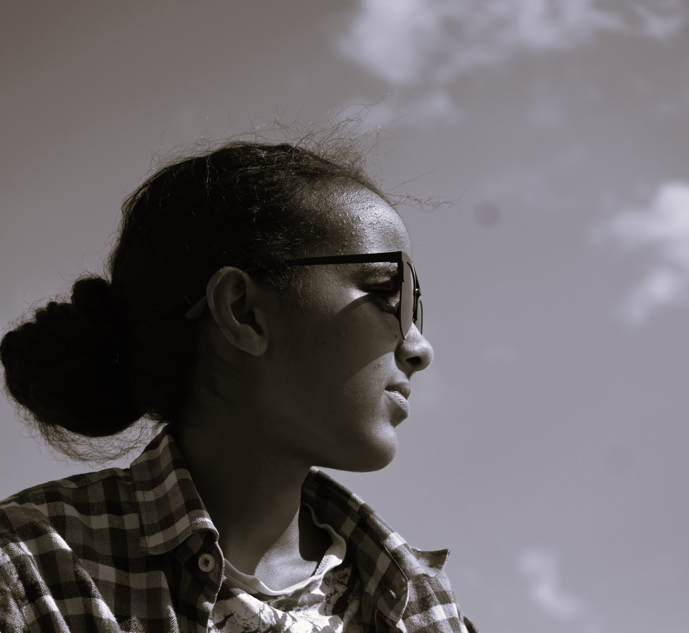

Resume Website!
Elshaday Dabera Dendir!
Education
I am currently pursuing my degree in architecture at Wachemo University. This academic journey has deepened my understanding of technology, design, and creativity, complementing my work as a web developer and painter. Balancing both my studies and professional projects, I continually explore innovative ways to apply what I learn in the classroom to both my web development and artistic endeavors.
Work Experiences
Web Development:
As a passionate web developer, I specialize in creating modern, functional, and visually appealing websites. My expertise includes building portfolio websites that effectively showcase work, ensuring responsive design, and enhancing user experience. My projects span a variety of industries, with a focus on delivering tailored solutions to clients.
Painting:
A longside my web development career, I am an accomplished painter. I’ve created numerous artworks, each reflecting my personal vision and artistic flair. My paintings explore diverse themes and techniques, allowing me to express creativity in both the digital and traditional art forms.
summary
Elshaday Dabera is a talented web developer and painter who brings creativity to both the digital and artistic worlds. With a passion for designing functional and visually stunning websites, Elshaday blends technical skills with a keen eye for aesthetics. As a painter, they express their artistic vision through various mediums, showcasing their unique perspective. Whether crafting digital experiences or painting, Elshaday's work reflects a deep commitment to both technology and art, making them a versatile creator with a flair for innovation and creativity.
To know More About My Country & To Get My address
To contact me: